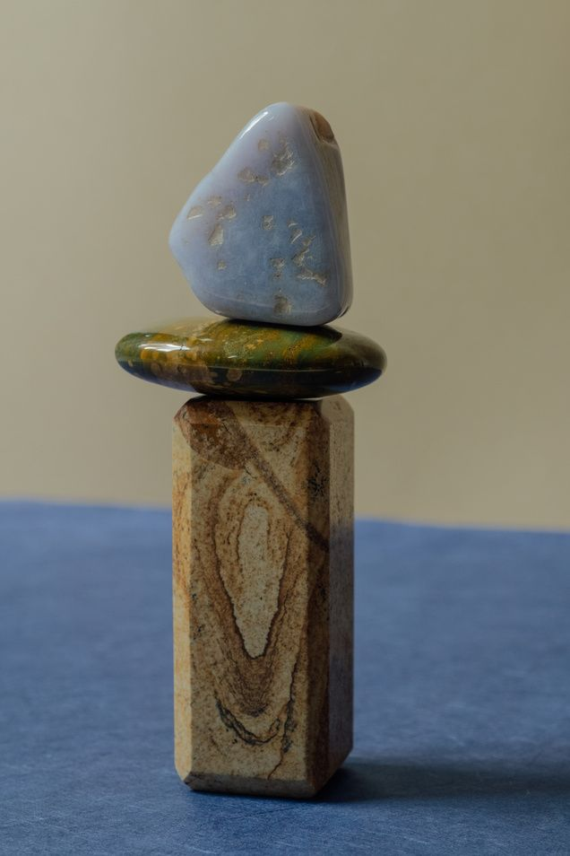

Student Chapter · Naveen Jindal School of Management
Association for Information Systems
Where UT Dallas students learn the tools, meet the people, and build the experience behind a career in technology.
Who we are
Welcome to AIS
We promote the study and practice of information systems through professional development, technical workshops, and a community of students who like figuring out how technology and business fit together.
Whether you’re aiming for analytics, consulting, product or engineering, AIS is where you practise the skills, meet the people, and find your footing.

What we do
Learn. Connect. Build. Compete.
- Professional developmentRésumé reviews, mock interviews, and career prep aimed at IS, analytics, and consulting roles.
- Technical workshopsHands-on sessions in SQL, Python, cloud, data visualisation, and the tools employers actually use.
- Industry speakersTalks and panels with professionals from the companies that hire UT Dallas students.
- Case competitionsReal business problems, tight deadlines, and a chance to present to judges from industry.
- Social eventsMixers, game nights, and outings that turn members into friends outside the classroom.
Coming up
All events


Questions
Frequently asked
Who can join AIS?
Any UT Dallas student. You don’t need to be an information systems major; members come from business, computer science, data science, finance and more.
How do I become a member?
Fill in the form on the Join page and choose “Joining AIS”. An officer will follow up with next steps.
What happens at a typical meeting?
General meetings mix chapter updates with a workshop, speaker or social, so there’s always something to learn and people to meet.
Can my company work with the chapter?
Yes. We host speakers, workshops and recruiting events with industry partners. Choose “Partnering” on the Join form and we’ll be in touch.
How do I hear about upcoming events?
Tick “Add me to the email list” on the Join form, follow us on Instagram and LinkedIn, or join our Flare.